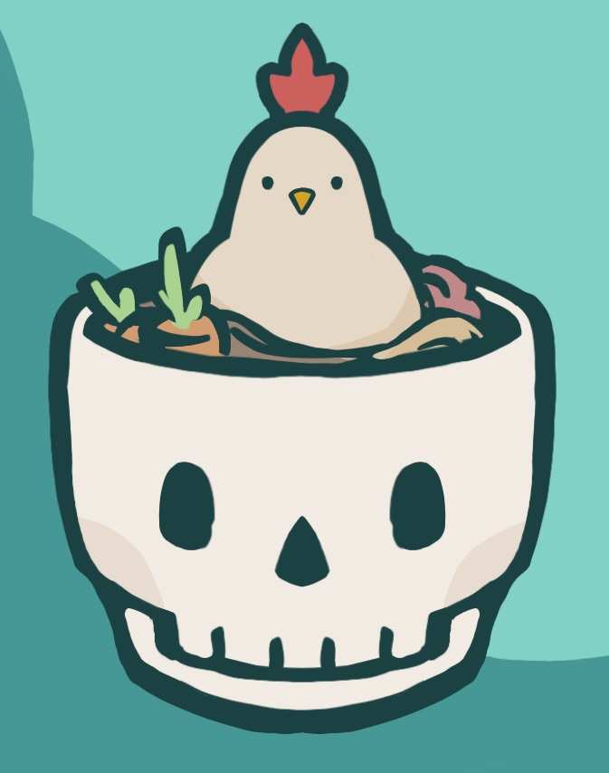

Hi again, I'm Rosalind! And although I'm a data science and math major, I like making art a lot! In fact, most of my hobbies are some form of art or craft. A non-exhaustive list would be illustration (alongside comic-making), animation, pottery, bookbinding, crochet, stamp carving, sewing, and so on. And the list of hobbies that I want to pick up but haven't gotten the chance is just as long! So, this website is a small collection of images of various artistic creations by me. Despite the breadth of my artistic ambitions, a significant amount of it is drawings/digital art, since that is my first and most serious artistic hobby.
Much of my art is inspired by the great amount of fantasy novels that I read throughout my childhood, which has stayed constant throughout my life. Recently, I've also taken on more inspiration from the art nouveau design movement and medieval illumination. I would draw more science fiction, but my artistic strengths unfortunately do not yet lay in technical structures like technology or architecture. I don't have nearly as much time to draw as I used to, now that I'm in college, but I'm always trying to fit it in somewhere. I hope you enjoy looking at my art!